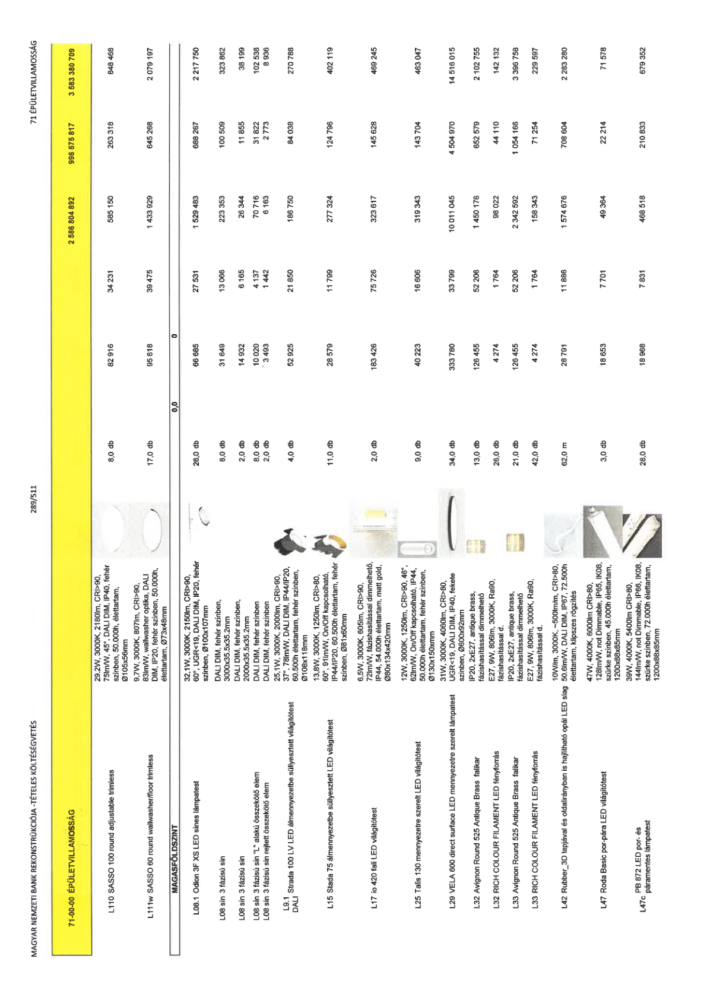

| Tétel | Menny. | Egys. | Anyag e.ár (net HUF) | Díj e.ár (net HUF) | Anyag összesen (net HUF) | Díj összesen (net HUF) | Anyag+Díj összesen (net HUF) |
|---|---|---|---|---|---|---|---|
| 71-00-00 ÉPÜLETVILLAMOSSÁG | NaN | NaN | 0 | 0 | 2 586 804 892 | 996 575 817 | 3 583 380 709 |
| 29,2W, 3000K, 2180lm, CRI>90, 75lm/W, 45°, DALI DIM, IP40, fehér színben, 50.000h, élettartam, Ø105x56mm | 0 | 0 | 0 | 0 | 0 | 0 | 0 |
| L110 SASSO 100 round adjustable trimless | 8,0 | db | 82 916 | 34 231 | 585 150 | 263 318 | 848 468 |
| 9,7W, 3000K, 807lm, CRI>90, 83lm/W, wallwasher optika, DALI DIM, IP20, fehér színben, 50.000h. élettartam, Ø73x48mm | 0 | 0 | 0 | 0 | 0 | 0 | 0 |
| L111w SASSO 60 round wallwasher/floor trimless | 17,0 | db | 95 618 | 39 475 | 1 433 929 | 645 268 | 2 079 197 |
| MAGASFÖLDSZINT | NaN | NaN | 0 | 0 | 0 | 0 | 0 |
| 32,1W, 3000K, 2150lm, CRI>90, 60°, UGR<19, DALI DIM, IP20, fehér színben, Ø100x107mm | 0 | 0 | 0 | 0 | 0 | 0 | 0 |
| L08.1 Odion 3F XS LED sínes lámpatest | 26,0 | db | 66 685 | 27 531 | 1 529 483 | 688 267 | 2 217 750 |
| DALI DIM, fehér színben, 3000x35,5x35,2mm | 0 | 0 | 0 | 0 | 0 | 0 | 0 |
| L08 sín 3 fázisú sín | 8,0 | db | 31 649 | 13 066 | 223 353 | 100 509 | 323 862 |
| DALI DIM, fehér színben, 2000x35,5x35,2mm | 0 | 0 | 0 | 0 | 0 | 0 | 0 |
| L08 sín 3 fázisú sín | 2,0 | db | 14 932 | 6 165 | 26 344 | 11 855 | 38 199 |
| DALI DIM, fehér színben | 0 | 0 | 0 | 0 | 0 | 0 | 0 |
| L08 sín 3 fázisú sín "L" alakú összekötő elem | 8,0 | db | 10 020 | 4 137 | 70 716 | 31 822 | 102 538 |
| DALI DIM, fehér színben | 0 | 0 | 0 | 0 | 0 | 0 | 0 |
| L08 sín 3 fázisú sín rejtett összekötő elem | 2,0 | db | 3 493 | 1 442 | 6 163 | 2 773 | 8 936 |
| 25,1W, 3000K, 2000lm, CRI>90, 37°, 78lm/W, DALI DIM, IP44/IP20, 60.500h élettartam, fehér színben, Ø108x118mm | 0 | 0 | 0 | 0 | 0 | 0 | 0 |
| L9.1 DALI Strada 100 LV LED álmennyezetbe süllyesztett világítótest | 4,0 | db | 52 925 | 21 850 | 186 750 | 84 038 | 270 788 |
| 13,8W, 3000K, 1250lm, CRI>80, 60°, 91lm/W, On/Off kapcsolható, IP44/IP20, 60.500h élettartam, fehér színben, Ø81x60mm | 0 | 0 | 0 | 0 | 0 | 0 | 0 |
| L15 Stada 75 álmennyezetbe süllyesztett LED világítótest | 11,0 | db | 28 579 | 11 799 | 277 324 | 124 796 | 402 119 |
| 6,5W, 3000K, 605lm, CRI>90, 72lm/W, fázishasítással dimmelhető, IP44, 54.000h élettartam, matt gold, Ø80x134x420mm | 0 | 0 | 0 | 0 | 0 | 0 | 0 |
| L17 io 420 fali LED világítótest | 2,0 | db | 183 426 | 75 726 | 323 617 | 145 628 | 469 245 |
| 12W, 3000K, 1250lm, CRI>90, 46°, 62lm/W, On/Off kapcsolható, IP44, 50.000h élettartam, fehér színben, Ø130x150mm | 0 | 0 | 0 | 0 | 0 | 0 | 0 |
| L25 Talis 130 mennyezetre szerelt LED világítótest | 9,0 | db | 40 223 | 16 606 | 319 343 | 143 704 | 463 047 |
| 31W, 3000K, 4060lm, CRI>80, UGR<19, DALI DIM, IP40, fekete színben, Ø600x92mm | 0 | 0 | 0 | 0 | 0 | 0 | 0 |
| L29 VELA 600 direct surface LED mennyezetre szerelt lámpatest | 34,0 | db | 333 780 | 33 799 | 10 011 045 | 4 504 970 | 14 516 015 |
| IP20, 2xE27, antique brass, fázishasítással dimmelhető | 0 | 0 | 0 | 0 | 0 | 0 | 0 |
| L32 Avignon Round 525 Antique Brass falikar | 13,0 | db | 126 455 | 52 206 | 1 450 176 | 652 579 | 2 102 755 |
| E27, 9W, 806lm, 3000K, Ra90, fázishasítással d. | 0 | 0 | 0 | 0 | 0 | 0 | 0 |
| L32 RICH COLOUR FILAMENT LED fényforrás | 26,0 | db | 4 274 | 1 764 | 98 022 | 44 110 | 142 132 |
| IP20, 2xE27, antique brass, fázishasítással dimmelhető | 0 | 0 | 0 | 0 | 0 | 0 | 0 |
| L33 Avignon Round 525 Antique Brass falikar | 21,0 | db | 126 455 | 52 206 | 2 342 592 | 1 054 166 | 3 396 758 |
| E27, 9W, 806lm, 3000K, Ra90, fázishasítással d. | 0 | 0 | 0 | 0 | 0 | 0 | 0 |
| L33 RICH COLOUR FILAMENT LED fényforrás | 42,0 | db | 4 274 | 1 764 | 158 343 | 71 254 | 229 597 |
| 10W/m, 3000K, ~500lm/m, CRI>80, 50,8lm/W, DALI DIM, IP67, 72.500h élettartam, klipszes rögzítés | 0 | 0 | 0 | 0 | 0 | 0 | 0 |
| L42 Rubber_3D lapjával és oldalirányban is hajlítható opál LED slag | 62,0 | m | 28 791 | 11 886 | 1 574 676 | 708 604 | 2 283 280 |
| 47W, 4000K, 6000lm CRI>80, 128lm/W, not Dimmable, IP65, IK08, szürke színben, 45.000h élettartam, 1200x88x85mm | 0 | 0 | 0 | 0 | 0 | 0 | 0 |
| L47 Roda Basic por-pára LED világítótest | 3,0 | db | 18 653 | 7 701 | 49 364 | 22 214 | 71 578 |
| 39W, 4000K, 5400lm CRI>80, 144lm/W, not Dimmable, IP66, IK08, szürke színben, 72.000h élettartam, 1200x88x85mm | 0 | 0 | 0 | 0 | 0 | 0 | 0 |
| L47c PB 872 LED por- és páramentes lámpatest | 28,0 | db | 18 968 | 7 831 | 468 518 | 210 833 | 679 352 |
